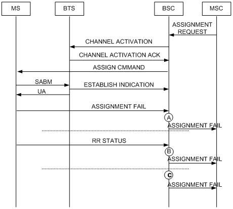
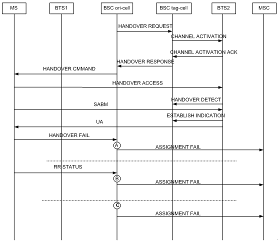

Measurement Counter
A3169A: CELL_ASS_FAIL_UM_CAUSE
Description
This measurement provides the number of failed assignments concerning the Um interface.
- In normal assignment procedure, after sending the ASS CMD message to the MS, the BSC starts the assignment success timer. This measurement involves the assignment failures received during the time for assignment success response and the failures
concerning the reception of the RR STATUS message without further reassignment.
- In normal assignment procedure, the failures are those received before the expiry of the timer for assignment success response.
- In directed retry procedure, after sending the HO CMD message to the MS, the BSC starts the handover success timer. This measurement involves the handover failures received during the time for handover success response and the failures concerning
the reception of the RR STATUS message without further reassignment.
- In directed retry procedure, the failures are those received before the expiry of the timer for handover success response.
Unit
Integer number or integer.
Measurement Point
After sending an assignment request message to the BSC, the MSC waits for the MS to sends an assignment complete message to the BSC. This counter is measured in the following situations:
- The MS sends to the BSC a DATA INDICATION message, which contains the Um assignment failure cause. If the BSC does not perform reassignment after receiving the message, the counter is incremented by one. See measurement point A in Figure 1.
- The MS sends an RR STATUS message to the BSC. If the cause value carried in the message is not Semantically incorrect message, Invalid mandatory information, Message type non-existent or not implemented, or Conditional IE error, and reallocation
is not performed, this counter is incremented by one. See measurement point B in Figure 1.
- After sending an assignment command message to the MS, the BSC starts T3107, which is specified for assignment complete response. If the timer expires, the counter is incremented by one. See measurement point C in Figure 1.
- After receiving the assignment request message from the MSC, the BSC does not initiate directed retry because no channel is available for use. The MS is handed over to a new cell, in which the MS sends to the BSC a DATA INDICATION message containing
the assignment failure cause over the Um interface. If the BSC does not perform reassignment after receiving the message, the counter is incremented by one. See measurement point A in Figure 2.
- After receiving the assignment request message from the MSC, the BSC does not initiate directed retry because no channel is available for use. The MS is handed over to a new cell, in which the MS sends to the BSC an RR STATUS message. If the cause
value carried in the message is not Semantically incorrect message, Invalid mandatory information, Message type non-existent or not implemented, or Conditional IE error, and if no reassignment is done, the counter is incremented by one. See measurement
point B in Figure 2.
- After receiving the assignment request message from the MSC, the BSC does not initiate directed retry because no channel is available for use. Instead, the BSC sends a HANDOVER COMMAND message to the MS in the new cell and starts T3103, which is
specified for handover complete response. If the timer expires, the counter is incremented by one. See measurement point C in Figure 2.
Figure 1 Normal assignment failure

| A: number of assignment failures concerning the reception of the assignment failure message over the Um interface |
| B: number of assignment failures concerning the reception of the RR STATUS message over the Um interface, the message of which causes assignment failure over the Um interface |
| C: number of assignment failures concerning the expiration of the timer specified for assignment complete response |
Figure 2 Assignment failure caused by directed retry

| A: number of assignment failures concerning the reception of the handover failure message over the Um interface |
| B: number of assignment failures concerning the reception of the RR STATUS message over the Um interface, the message of which causes handover failure |
| C: number of assignment failures concerning the expiration of the timer specified for handover complete response |
Formula
This is an original counter without involving any formula.
Copyright © Huawei Technologies Co., Ltd.